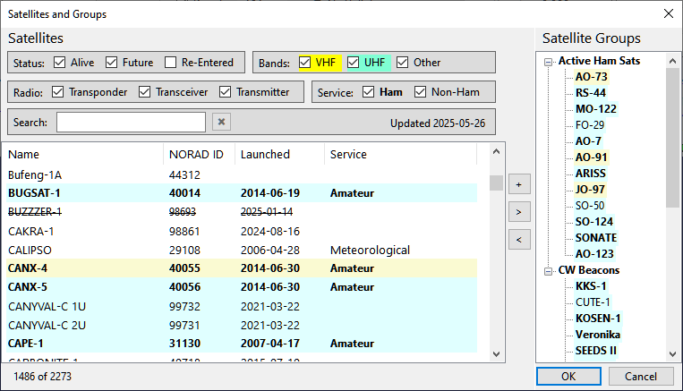

Satellites and Groups
Click on Tools / Satellites and Groups in the main menu to open the Satellites and Groups window:

Exploring the satellite data
This window is a great tool for browsing the information about the satellites that is available in SkyRoof. For a detailed description of the data see the Satellite Data section.
Highlighting
The satellites are highlighted based on their properties as described in the Satellite Highlighting section.
Filtering
Using the checkboxes at the top of the left panel, the satellites may be filtered by:
- Status - Alive, Future or Re-Entered. If you cannot find some satellite in the list, tick the Re-Entered checkbox, maybe this satellite has already re-entered the atmosphere;
- Bands - show only the satellites that have at least one transmitter working in the VHF (2m), UHF (70cm) or in any other band;
- Radio - the radio type: linear transponder, FM transceiver or a telemetry/beacon transmitter;
- Service - Ham or non-Ham, as marked in the database.
Searching
Use the Search box to search the satellites by name, callsign or NORAD Id. The search is case-insensitive, punctuation is ignored. If a satellite has multiple names, any name may be used. For example, the RS-44 satellite is found by entering "RS-44", "rs44" or "DOSAAF-85" in the search box.
The numbers on the bottom bar show the total number of satellites in the database and the number of those that match the filters and search string.
Viewing Details
Right-click on a satellite and click on Satellite Details, or press Ctrl-D, to open the Satellite Details window.
Renaming Satellites
To rename a satellite, press F2, or right-click on the satellite and click on Rename in the popup menu.
Editing Satellite Groups
The right panel of the window shows the satellite groups. See the Creating Satellite Groups section for information about creating and editing the satellite groups. The following editing commands are available:
- the [+] button creates a new group. Press F2, or use the popup menu, to rename the group;
- the [>] and [<] buttons add or remove the satellites to/from the group;
- drad-and-drop from the satellite list to the group adds the satellite to the group;
- drag-and-drop of a satellite between the groups moves it to another group;
- drag-and-drop with the Ctrl key down adds a copy of the satellite to another group;
- drad-and-drop re-orders the groups, or the satellites in the group;
- the Delete key deletes the group, or the satellite from the group;
- the popup menu of the group or satellite is an alternative way of accomplishing the same tasks.